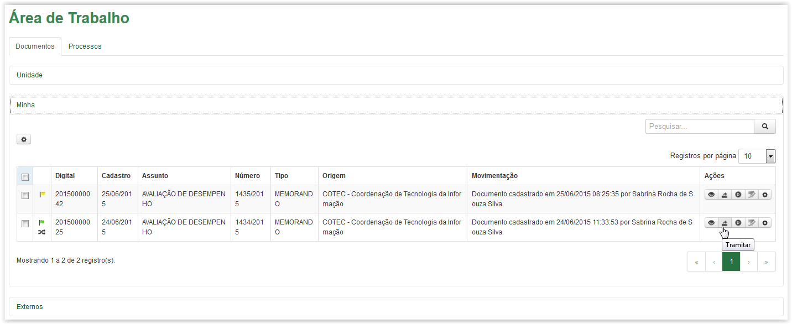
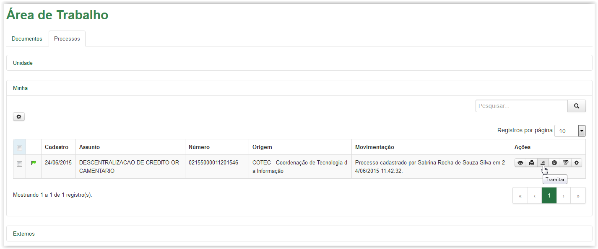
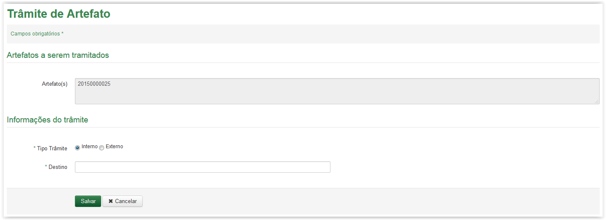
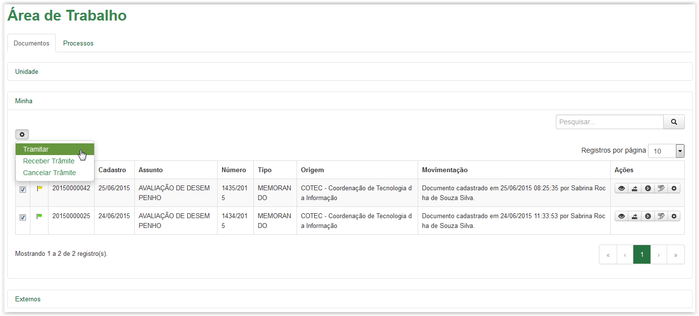
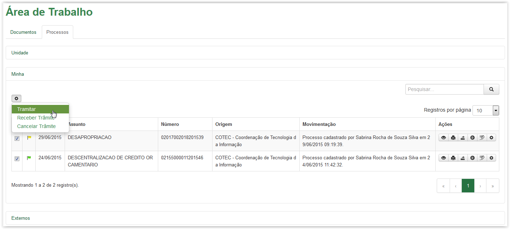
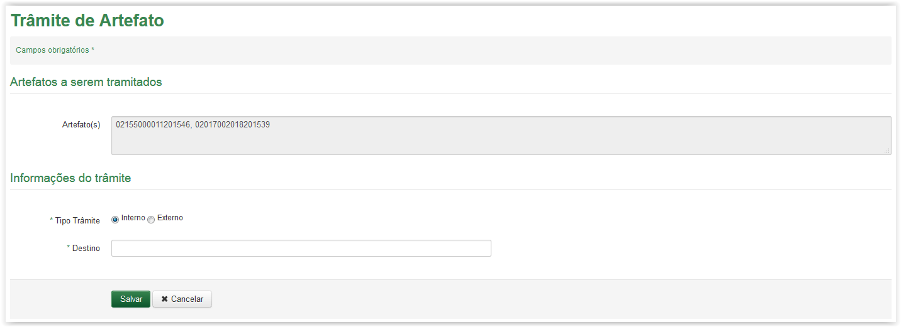

Tramitar artefatos
Para tramitar um único artefato, clique no ícone disponível na coluna Ações da Área de Trabalho. Esse ícone está disponível tanto na aba de Documentos quanto na aba de Processos:

Aba Documentos - Ícone Tramitar

Aba Processos - ÍconeTramitar
A tela Trâmite de Artefato é exibida apresentando no campo "Artefato(s)" o número do artefato (documento ou processo) selecionado:

Tramitar Documento

Tramitar Processo
Para tramitar vários artefatos (no mínimo 2), selecione os artefatos desejados e clique na opção Tramitar a partir do ícone situado acima da grid na Área de Trabalho. Esse ícone está disponível tanto na aba de Documentos quanto na aba de Processos:

Aba Documentos - Selecionando documentos e clicando na opção Tramitar

Aba Processos - Selecionando processos e clicando na opção Tramitar
A tela Trâmite de Artefato é exibida apresentando no campo "Artefato(s)" os números dos artefatos (documento ou processo) selecionados:
Tramitar documentos selecionados

Tramitar processos selecionados
Para sair da tela Trâmite de Artefato, clique no botão  :
:
Tela Trâmite de Artefato
O sistema retornará para a Área de Trabalho.
IMPORTANTE!!
Lembrete:
A ação de tramitar (um ou vários artefatos) somente é apresentada na Área Minha. Sendo assim, caso essa opção não esteja disponível, deve-se primeiramente Receber o artefato (documento ou processo) na Área de Trabalho Unidade ou Minha para depois ser possível efetuar a ação.
Created with the Personal Edition of HelpNDoc: Easily create Web Help sites